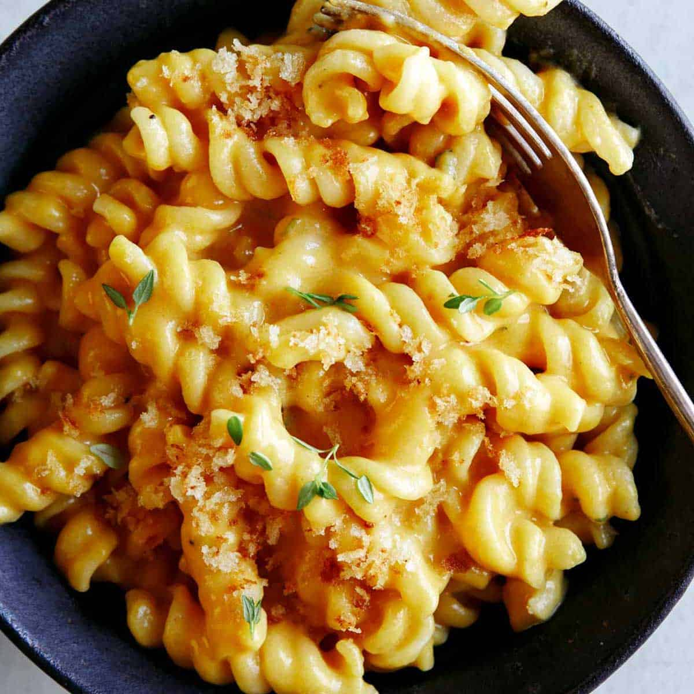

Mortadella Sandwich

Inspired by watching my 10 year old sister making this on her own. Read some cooking blogs and some videos and now I have this.
INGREDIENTS:
Here is what you'll need (measure with eyeballs):
- Liquid Milk
- Flour
- Butter (or cooking oil)
- Mustard
- Pasta (any kind, can even be spaghetti if you want)
- Mozzarella and Cheddar cheese (Can be both, can be only one of them, can be an entirely different kind of cheese. Please your taste buds, not me)
- Cajun spice
- Nutmeg
- Black pepper
- White pepper
- Magi cube seasoning
- Salt
- Garlic powder
- Onion powder
- Chilli flakes (optional, or you can use cayenne pepper, whichever you like)
I recommend you eat it with some kind of protein you fry on the side. I usually do that by frying chopped onions and minced garlic with either chicken boobies (or boneless chicken thighs if I'm not lazy and have the motivation to do the dishes) and hotdogs. Of course, season how you like. I usually use, black pepper, magi cube seasoning, cajun and yeah. Sometimes I even fry it with palm oil instead of butter or oil.
STEPS:
- Melt butter (or heat up like a tablespoon or two of cooking oil) and add flour to make roux. This is what will help our sauce thicken. Then fry this dough creation that has just been birthed and slowly add the milk while you're constantly mixing to prevent lumps.
- Pour in your pasta, make sure the milk is covering it and allow it to boil. Constantly stir or else your pasta will stick to the bottom of the pan and you're left scraping the remains.
- Add all your seasonings and mustard (weird I know but I put it) and mix very well. Don't want to be biting into a lump of garlic powder or something.
- Last but not least, add your cheesus and mix until melted and viola! Enjoy.
EXTRA TIPS:
Some extra stuff you can possibly do if you up to it:
- Don't add salt until you're done cooking and you taste. Cajun and the magi cube seasoning already have salt (and to some extent the cheese you might use). Try not to serve yourself high blood pressure when it was supposed to be a lazy mac and cheese.
- You could basically make bechamel sauce and pour it over cooked pasta that you fried a bit together with the protein mix thing I mentioned above and cover it with cheese on top and bake instead. But that will just give you more dishes and won't be the lazy version.
Click here to go back.